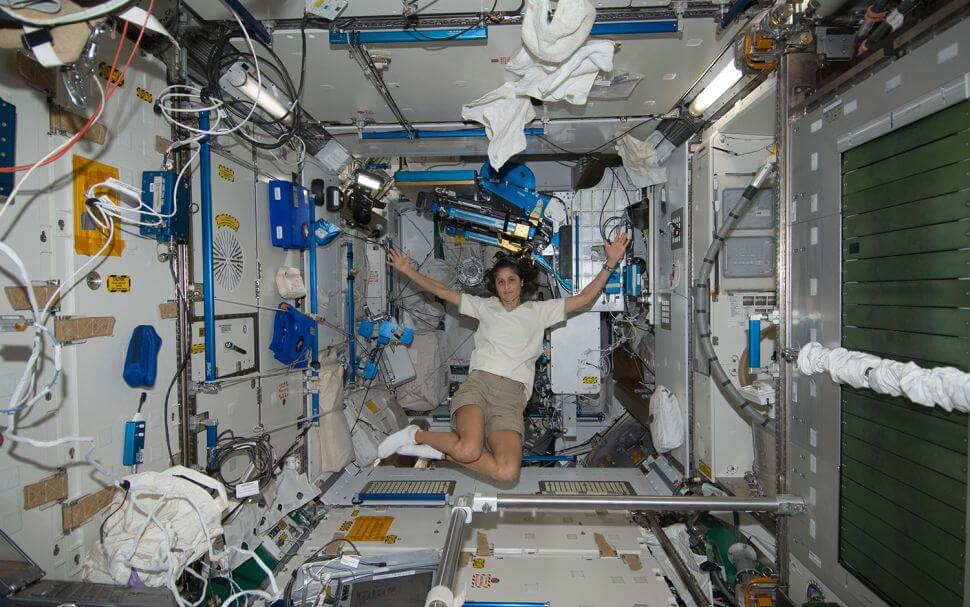

အပြည်ပြည် ဆိုင်ရာ အာကာသ စခန်းကြီးကို ၂၀၀၀ ခုနှက လွှတ်တင်ခဲ့တာ ဖြစ်ပါတယ်။ ဒီ အာကာသ စခန်းယာဉ်ဟာ ကမ္ဘာမြေပြင် အထက် ရေမိုင် ၂၂၇ မိုင် (၄၂၀ ကီလိုမီတာ / မိုင် ၂၆၁ မိုင်) အမြင့်ကနေ ကမ္ဘာကို ပတ်နေတာ ဖြစ်ပါတယ်။
အခုအချိန်ထိ ကမ္ဘာ့ နိုင်ငံပေါင်း ၁၉ နိုင်ငံက အာကာသ ယာဉ်မှူးပေါင်း ၂၀၀ ကျော် တာဝန်ထမ်းဆောင် ခဲ့ပြီး ဖြစ်ပါတယ်။ စလွှတ်တင်တဲ့ ၂၀၁၀ ခုနှစ်ကနေ အခုထိ တောက်လျှောက် အာကာသထဲမှာ အစဉ်မပြတ် လူနေထိုင်တဲ့ တစ်ခုတည်းသော အရာဝတ္ထုလဲ ဖြစ်ပါတယ်။
နာဆာရဲ့ အဆိုအရ အခု အပြည်ပြည် ဆိုင်ရာ အာကာသ စခန်းအစား ပုဂ္ဂလိက အာကာသ စခန်းယာဉ် တွေကို အစားထိုး အသုံးပြု သွားမယ်လို့ ဆိုပါတယ်။
“ပုဂ္ဂလိက ကဏ္ဍဟာ နာဆာ အဖွဲ့ရဲ့ အကူအညီနဲ့ ကမ္ဘာပါတ်လမ်း အနိမ့်ပိုင်း အာကာသ စခန်းတွေ တည်ဆောက်ဖို့နဲ့ လည်ပါတ်ဖို့ နည်းပညာ အရရော၊ ငွေကြေး အရပါ စွမ်းဆောင်ရည် ရှိနေပါပြီ။ ပုဂ္ဂလိက ကဏ္ဍက အာကာသ စခန်းတွေ လုံခြုံစိတ်ချ ရမှု၊ အန္တရာယ် ကင်းရှင်းမှုနဲ့ ငွေကုန်ကြေးကျ သက်သာမှု တို့ အတွက် ကျွန်တော်တို့ရဲ့ အတွေ့အကြုံတွေနဲ့ သင်ခန်းစာ တွေကို မျှဝေပေးနိုင်ဖို့ မျှော်လင့်ပါတယ်။” လို့ နာဆာရဲ့ ပုဂ္ဂလိက အာကာသ စီမံကိန်း ဒါရိုက်တာ ဖီလ် မက်လစ်စတာ (Phil McAlister, director of commercial space at NASA Headquarters) က ပြောပါတယ်။

အခု ပျက်ကျမယ့် ပွိုင့်နီမို ဟာ ကမ္ဘာ့ သမုဒ္ဒရာ တွေ အတွင်းမှာ ကုန်းမြေနဲ့ အဝေးဆုံး အရပ်ဒေသ ဖြစ်ပါတယ်။ ဒီဒေသဟာ ပစိဖိတ် သမုဒ္ဒရာ တောင်ပိုင်းက အရပ်ဒေသ တစ်ခု ဖြစ်ပါတယ်။ ဒီဒေသကို အာကာသက သက်တမ်းကုန် သွားတဲ့ ဂြိုဟ်တုတွေ ပျက်ကျတဲ့ “ဂြိုဟ်တု သင်္ချိုင်း” အဖြစ် အသုံးပြု ခဲ့ကြတာ ကြာခဲ့ပါပြီ။
ဒီ ပွိုင့်နီမို ဟာ အနီးဆုံး နယူးဇီလန် ကျွန်းကနေဆို မိုင် ၃,၀၀၀ လောက် ဝေးပြီး အန္တာတိက တိုက် ကမ်းရိုးတန်းကနေ မိုင် ၂,၀၀၀ လောက် ဝေးပါတယ်။ ခန့်မှန်းချက် အရ ဒီနေရာမှာ အခုထိ သက်တမ်းကုန် ဂြိုဟ်တုပေါင်း ၂၆၃ စင်း ပျက်ကျခဲ့ပြီး ဖြစ်တယ်လို့ ဆိုပါတယ်။
အပြည်ပြည် ဆိုင်ရာ အာကာသ စခန်းကြီးကို အနားမပေးမီ ၂၀၃၀ မတိုင်မီ ကြားကာလမှာ ဒီ အာကာသ စခန်းယာဉ် ပေါ်မှာ သိပ္ပံ သုတေသနတွေ ဆက်လက် ပြုလုပ်သွားမှာ ဖြစ်တယ်လို့ ဆိုပါတယ်။
ဒီ အပြည်ပြည် ဆိုင်ရာ အာကာသ စခန်းအစီအစဉ်မှာ အစ ကတဲက မပါဝင် ခဲ့တဲ့ နိုင်ငံကတော့ တရုတ်နိုင်ငံပဲ ဖြစ်ပါတယ်။ တရုတ်တို့က သူတို့ကိုယ်ပိုင် အာကာသ စခန်းရဲ့ ပထမဆုံး အစိတ်အပိုင်းကို ပြီးခဲ့တဲ့ နှစ်က လွှတ်တင်ခဲ့ပါတယ်။ အပြည်ပြည် ဆိုင်ရာ အာကာသ စခန်းလောက် မကြီးပေမယ့် တရုတ် အာကာသ စခန်းဟာ ဒီနှစ် မကုန်မီမှာ စတင် တာဝန်ထမ်းဆောင် နိုင်လိမ့်မယ်လို့ ဆိုပါတယ်။
အပြည်ပြည် ဆိုင်ရာ အာကာသ စခန်းမှာ ပါဝင်တဲ့ နိုင်ငံ တစ်နိုင်ငံ ဖြစ်တဲ့ ရုရှားကတော့ ၂၀၂၅ ခုနှစ်မှာ ဒီ အာကာသ စခန်း စီမံကိန်းကနေ နှုတ်ထွက်တော့မယ်လို့ ဆိုပါတယ်။ ရုရှားတို့ကလဲ သူတို့ကိုယ်ပိုင် အာကာသ စခန်းကို ၂၀၃၀ ခုနှစ်ထဲမှာ လွှတ်တင်နိုင်ဖို့ ကြိုးစား နေပါတယ်။